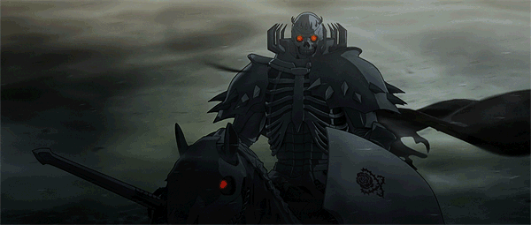
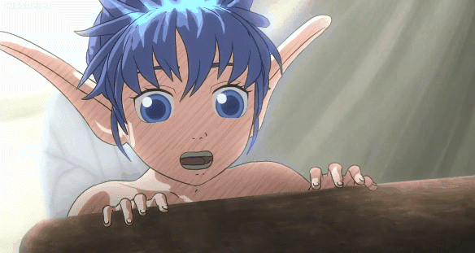
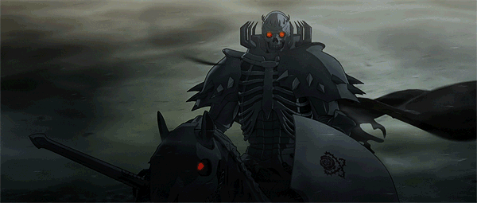
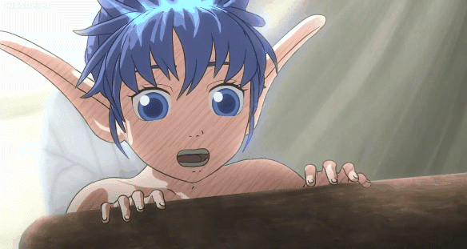
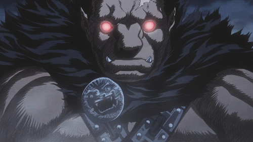
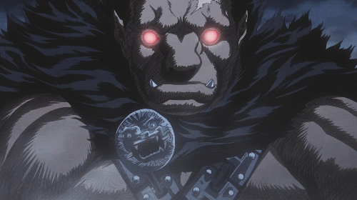

 

Guts
Guts é o protagonista de Berserk, criado por Kentaro Miura. Ele é um mercenário conhecido por sua força física extraordinária e habilidade em combate. Guts é marcado por uma infância traumática, tendo sido criado em um ambiente violento, o que molda sua personalidade feroz e independente. Sua história é profundamente trágica, marcada por batalhas contra forças demoníacas e uma busca por vingança contra seu antigo aliado, Griffith. O personagem simboliza a luta contra o destino e a resistência em face da adversidade.
Casca
Casca é uma personagem central em Berserk, conhecida por sua força, lealdade e complexidade emocional. Ela é a única mulher integrante do Bando do Falcão, um grupo de mercenários liderado por Griffith. Inicialmente, Casca é uma guerreira habilidosa e leal a Griffith, por quem nutre sentimentos profundos. Ela tem uma relação complicada com Guts, que evolui de rivalidade para amor. No entanto, após os eventos traumáticos do Eclipse, onde ela é brutalmente atacada e perde sua sanidade, Casca passa a depender de Guts para proteção. Sua história é marcada por tragédia, dor e luta por recuperar sua identidade e força interior.
Griffith
Griffith é um personagem complexo, sendo o carismático líder do Bando do Falcão. Ambicioso e extremamente inteligente, Griffith sonha em conquistar seu próprio reino e está disposto a fazer qualquer coisa para alcançar esse objetivo. Ele possui uma beleza quase etérea e uma habilidade estratégica excepcional, o que o torna um líder natural e admirado por todos ao seu redor. Apesar de seu exterior encantador, Griffith esconde uma ambição implacável. Sua obsessão pelo sonho de poder o leva a tomar decisões cruéis, culminando na traição de seus companheiros mais próximos durante o Eclipse.
Skull Knight
Skull Knight é uma figura enigmática e poderosa em Berserk, com uma armadura esquelética e um elmo em forma de caveira. Ele é um guerreiro antigo que vaga pelo mundo por séculos, sempre em busca de enfrentar as forças demoníacas. O Skull Knight é um dos poucos personagens que compreende a verdadeira natureza da Mão de Deus. Ele frequentemente aparece para ajudar Guts e Casca, oferecendo conselhos crípticos e salvando-os em momentos críticos. Sua motivação é misteriosa, mas ele parece estar em uma missão pessoal de vingança contra aqueles que manipularam o destino da humanidade.
Puck
Puck é um elfo travesso e de bom coração, que acompanha Guts em sua jornada. Pequeno e alado, ele traz um alívio cômico à história com seu comportamento brincalhão e irreverente, contrastando com o tom sombrio da série. Apesar de sua aparência frágil, Puck possui habilidades curativas e uma forte lealdade a Guts. Ele age como um amigo fiel e, muitas vezes, oferece conselhos sábios, além de ser uma das poucas fontes de leveza em um mundo cheio de escuridão e sofrimento.
Isidro
Isidro é jovem e impulsivo, aspirando a se tornar um grande espadachim. Ele é corajoso, mas muitas vezes age de forma imprudente, o que o coloca em situações perigosas. Apesar de sua inexperiência, Isidro é determinado e tem um grande senso de humor, trazendo leveza ao grupo de Guts. Ele admira Guts profundamente e vê nele um mentor, buscando aprender e crescer como guerreiro ao longo da jornada. Isidro também é habilidoso com facas e, com o tempo, desenvolve suas próprias técnicas de combate.
Nosfetaru Zodd
Zodd é um dos mais temidos e icônicos apóstolos de. Ele é um guerreiro imortal, gigantesco e de aparência bestial, com chifres e uma força sobre-humana. Zodd é conhecido por sua sede insaciável por combate e por desafiar os guerreiros mais poderosos, buscando sempre uma luta digna. Ele tem uma aparência aterrorizante e se transforma em uma criatura ainda mais monstruosa durante as batalhas. Apesar de sua natureza feroz e violenta, Zodd respeita guerreiros fortes, como Guts e Griffith, e acaba se tornando um aliado temporário em certos momentos.